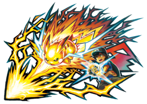

Movimientos z

Un movimiento Z es una característica introducida en la septima generación en la región de alola durante los juegos de Pokémon Sol y Pokémon Luna para los combates, que permite la ejecución de un movimiento de gran potencia. Cada entrenador solo puede realizar un único movimiento Z durante cada combate, aunque a partir de Pokémon Ultrasol y Pokémon Ultraluna es posible usar un segundo movimiento Z en combate cuando la RotomDex usa su apoyo en forma de poder Z de combate; sin embargo, esto solo ocurre en algunas ocasiones.
Requerimiento
Para poder realizar el movimiento Z es necesario que el entrenador disponga en su muñeca de una pulsera Z y que el Pokémon lleve equipado un cristal Z. Para ejecutar el movimiento, el entrenador debe realizar una serie de movimientos y poses específicas, que dependen del tipo del movimiento a realizar. De esta forma, las voluntades del entrenador y el Pokémon resuenan y el Pokémon queda envuelto en un halo de poder Z que le permite ejecutar el movimiento.
Hay dos tipos de cristales Z, los que están asociados a cada uno de los tipos elementales y los que son específicos de un Pokémon. Los cristales Z afiliados a un tipo elemental se pueden activar siempre y cuando el Pokémon conozca un movimiento del mismo tipo que el del cristal que se va a activar, mientras que los específicos se pueden activar cuando el Pokémon asociado a dicho movimiento conozca un movimiento concreto.
Funcionamiento

El funcionamiento de los movimientos Z consiste en transformar los movimientos normales en movimientos Z. Esta transformación puede ser de tres clases: en el caso que el movimiento original sea un movimiento de daño, en el caso que sea un movimiento de estado o en el caso de los movimientos Z característicos. Los PP se reducen del movimiento en el que se basa el movimiento.
Movimientos Z de daño

En el caso de los movimientos de daño, como chispa o hiperrayo, el poder Z transforma el movimiento en un movimiento Z de su mismo tipo y categoría. Existen un total de 18 movimientos Z de daño asociado a cada uno de los tipos. Siguiendo el ejemplo anterior, chispa se convierte en gigavoltio destructor de categoría físico e hiperrayo pasa a ser carrera arrolladora de categoría especial. La potencia del movimiento Z depende también del movimiento usado para realizar. A mayor potencia del movimiento original, mayor potencia del movimiento Z resultante. Por ejemplo, placaje genera una carrera arrolladora de potencia 100, mientras que gigaimpacto genera una carrera arrolladora de potencia 200. A excepción de infortunio (65 ? 160), megaagotar (40 ? 120), meteorobola (50 ? 160), núcleo castigo (100 ? 140), plancha voladora (100 ? 170), rueda doble (50 ? 180) y V de fuego (180 ? 220); la potencia de los movimientos Z siguen la siguiente tabla:
Los movimientos Z de daño tienen una serie de características comunes:
El movimiento Z no toma características del movimiento original, incluyendo precisión, efectos secundarios, prioridad, objetivos, alto índice de golpe crítico, necesidad de carga, etc.El movimiento Z gasta 1 PP del movimiento original, por lo que si no quedan PP de dicho movimiento, no se podrá usar.
El movimiento Z ignora cambios en la precisión del usuario y la evasión del objetivo. Pero puede fallar si el objetivo está utilizando movimientos como Vuelo o Buceo y también si el Pokémon que va a realizarlo está confundido y se daña a sí mismo en ese turno.
El movimiento Z puede dar un golpe crítico.El Pokémon objetivo no puede protegerse completamente del daño del movimiento Z. Si el objetivo ha usado protección, detección, vastaguardia, barrera espinosa, escudo real o búnker en ese turno, recibirá un 25 % del daño que fuera a haber hecho, pudiendo dar también un golpe crítico. El movimiento Z se ve afectado por efectividad, resistencias y habilidades. Por ejemplo, los Pokémon de tipo fantasma siguen siendo inmunes a movimientos Z de tipo lucha, y la habilidad colector atrae y anula los movimientos Z de tipo agua. Sin embargo, no se ven afectados por habilidades de cambio de tipo como piel celeste o normalidad.